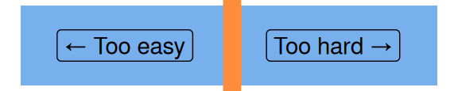

Excel formulas
This session is part of our Excel for beginners course. That’s a series of six linked sessions, delivered on Teams, that give an introduction to Excel for people working in health and social care. The sessions are:
- Excel first steps
- Tidy data in Excel
- References and names in Excel
- Excel formatting
- Excel tables
- Excel formulas (this session)
Together, they aim to help you develop an appropriate set of Excel skills to help your work. This session covers formulas in Excel:

- for this session, you’ll need to be familiar with the Excel basics (getting around in Excel, opening/saving/closing files)
- you’ll also need to be familiar with A1 referencing, values, and tables
- we’re going to avoid talking about formatting as much as possible today
Previous attendees have said…
- 21 previous attendees have left feedback
- 100% would recommend this session to a colleague
- 100% said that this session was pitched correctly

- this was exactly what I needed as I had been playing about with formulas that I had found online to solve problems I was having, but I didn’t really understand them. This will help me feel more confident with playing about with my data.
- Well delivered, appropriate, useful content - was helpful to try out the examples during the session.
- Structured teaching methods
- all materials
- slides
html / pdf - sample file
.xlsx
Session outline
- values and formulas
- simple functions
- references in formulas
Values and formulas
- cells in Excel contain either values, or formulas
- we’ll start with some data derived from NRS 2022 population estimates
- make sure you have the sample data available
Values

- when you enter some data in a cell, we call that a value
- values look the same in their cell as in the formula bar
Formulas
- we can also make a value using a formula
- Excel evaluates/calculates the formula, then displays the result as a value
- in an empty cell, try entering
= 2 + 2

Example formulas
- we can do ordinary arithmetic in formulas
/,*,-,+… - you can also try
&which joins values= "This number is " & 5
Functions
- But most formulas use functions, which are like the verbs of Excel
- Try
= SUM(2, 2)
Adding functions
you can type functions in by name (as above)
you can also add from the
Formulasarea of the ribbon
or you can use the \(fx\) button by the formula bar

Function arguments
adding a function by \(fx\) or the menu brings up the Function Arguments interface

This is a helpful builder for more complicated functions
What are arguments?
arguments are the values we supply to a function
- in
=SUM(2,3), the arguments are2and3
- in
we separate arguments with a comma
,we need to be sure we’re supplying the right arguments in the right order (this gets described as the syntax of a function)
we also, while we’re on the jargon, say that functions return a value so
= SUM(4,3)will return7
Useful simple functions
- in the same way as
=SUM(), you can try:AVERAGEMINandMAXSUBSTITUTECEILINGTODAYROUND
References in formulas
- mostly, you won’t add values directly into your formulas
- instead, you’ll bring them in from another part of your spreadsheet
- can you use
SUM()to make a totalMale+Femalecolumn in the supplied data?- add a header in cell
G2 - if needed, extend the table to include your new column
- in
G3, enter the formula= SUM(C3, D3) - then copy down the rows by double-clicking the green fill handle

- add a header in cell
Practice
- calculate what proportion of your total population is under 16 (thanks, Lara Paterson (NHS Lanarkshire))
- estimate the population density
- find an average area for each council area
Troubleshooting functions
#NAME?= “I don’t recognise that function name”#VALUE!= “Your syntax has gone wrong - usually in the wrong order”#REF!= “I don’t recognise that reference”#DIV/0!= “You’ve divided by zero”